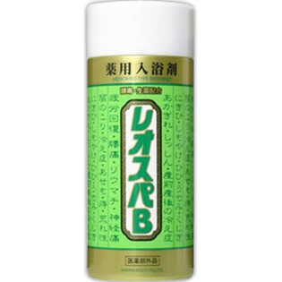

返回列表
产品名称：薬用 レオスパＢ

関西酵素 薬用 レオスパＢ ８３０Ｇ（医薬部外品）
メーカー 関西酵素
JANコード 4971883201272
商品の特徴
酵素・生薬配合
成分・分量
＜有効成分＞
蛋白分解酵素、炭酸水素Na、生薬（ウンシュウミカン）、柚子、レモン合剤粉末
用法及び用量
一般家庭浴槽(約180-200L)に本品約20gを入れ、よく溶かしてから入浴してください。(キャップ内側の線が約20gです。)